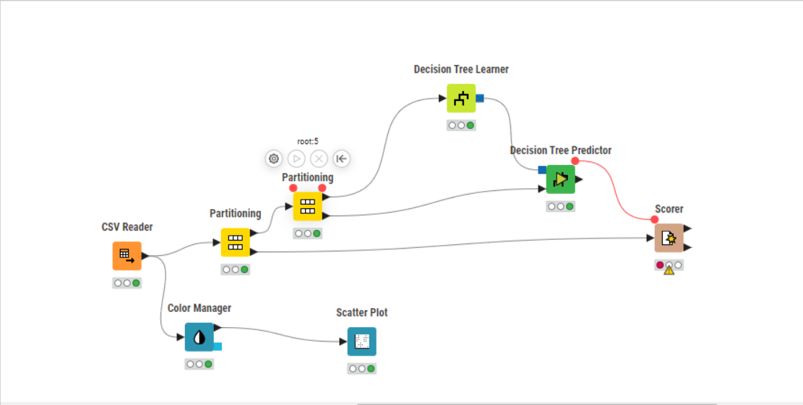
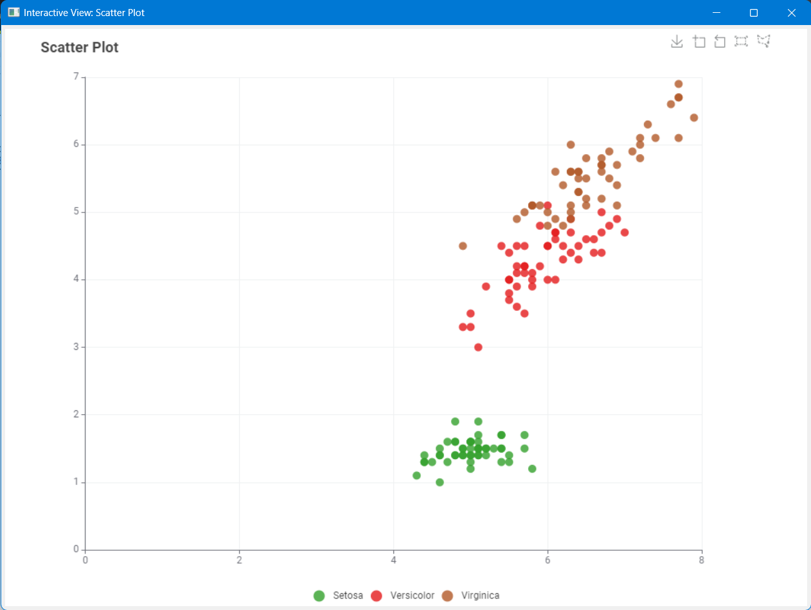
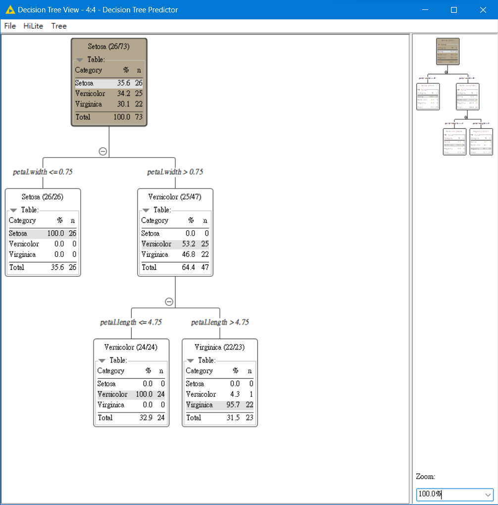

鳶尾花（Iris）介紹 教科系余竑毅(111090008)
請掃描本網站QRcode

鳶尾花是一種美麗且多樣的花卉，屬於鳶尾科。它們有著獨特的花瓣結構，通常呈現豐富的色彩。這種植物在全世界都很受歡迎，常被用於園藝裝飾。
特點
鳶尾花的花瓣具有獨特的形狀，通常分為上下兩層。它們的顏色可以從純白到深紫，甚至是多色混合。這種花卉喜歡陽光充足的環境，且耐寒性良好。
種植與照顧
鳶尾花在春季開花，種植時需要良好的排水和充足的陽光。它們對土壤的要求不嚴，但在鬆散肥沃的土壤中生長得更好。定期澆水和施肥可以幫助鳶尾花更好地成長。
鳶尾花（Iris）的棲息地與水中生存特性
鳶尾花是一種多年生植物，屬於鳶尾科，廣泛分布於溫帶和寒帶地區。這些植物的棲息地多樣，包括濕地、河岸、湖邊以及其他濕潤環境。
在水中，鳶尾花展現出其驚人的生存能力。它們的根部特化，能在水下獲取氧氣，同時穩固植物在泥濘中的位置。葉片長且狹窄，有助於在水流中保持穩定，並且可以有效地進行光合作用。此外，鳶尾花的花朵通常高於水面，這不僅有助於吸引授粉者，也避免了花朵被水淹沒。
鳶尾花的這些特性不僅使其在自然環境中繁盛，也使其成為園藝愛好者在打造水景園藝時的理想選擇。
鳶尾花數據集在機器學習領域的重要性
鳶尾花數據集（Iris Dataset）是機器學習和統計分類領域中一個經典且廣泛使用的數據集。這個數據集包含了三個鳶尾花種類的150個樣本，每個樣本都有四個特徵：花瓣長度、花瓣寬度、萼片長度和萼片寬度。
在機器學習領域，鳶尾花數據集通常被用於監督學習算法的示範和測試，特別是對於分類任務。由於它的規模適中、數據整潔且易於理解，因此特別適合於機器學習新手學習和實驗。此外，這個數據集也經常出現在機器學習的教科書和教程中，作為引導學習者進入這個領域的一個入門範例。
總的來說，鳶尾花數據集對於初學者理解機器學習概念、練習數據處理和分析技巧以及建立初步的機器學習模型至關重要。
機器學習中的決策樹：以鳶尾花數據集為例
學習過程
決策樹是一種常用於分類問題的機器學習算法，其模型呈樹狀結構。在處理鳶尾花數據集時，決策樹將根據花的不同特徵進行學習和預測。

數據視覺化
散點圖顯示了不同鳶尾花物種的數據分佈，每個點代表一朵花，其在圖中的位置由花瓣和萼片的尺寸決定。

決策樹結果
這棵樹清晰地展示了如何根據不同的特徵來分類鳶尾花的物種。
